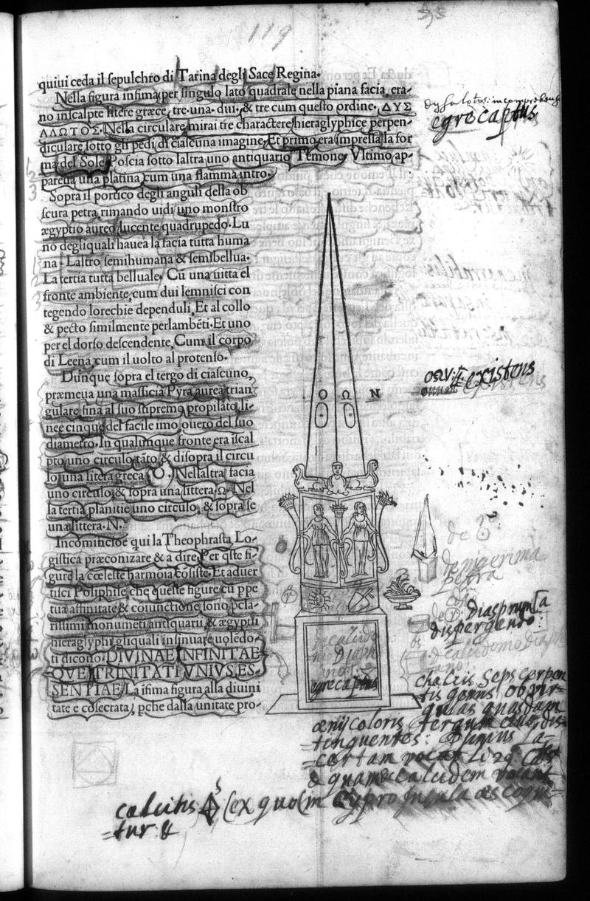

← All Folios
Signature h4r
Folio 60r, Quire h

British Library, London — C.60.o.12
Vision Reading (Phase 3 deep analysis)
Primary hand: Multiple · Hands: 3 · Type: woodcut_page · Sig: g7r
Woodcut: Obelisk with three figures in niches and inscriptions
Tall obelisk/monument with three standing figures in niches at its base. Each niche contains a classical figure. Above the figures: decorative panels. At the base: a Greek and Latin inscription in majuscule letters: 'DIVINAE AENINITATI / SANCTVRIQVE / LAVIT'. An ornamental band separates the figural and textual zones.
Condition: Good
Transcription Attempts
top_right · Latin · MEDIUM
prophetal [...] Graecae [...]
'prophetal' (prophetic), 'Graecae' (Greek). Reader identifying the Greek inscription
right_margin · Latin/Greek · MEDIUM
ORVS EXCISTVS [...] Theophrastia [...] Logica [...] praeconstrit [...]
'ORVS EXCISTVS' could be 'Horus Excistus' — an Egyptological reference. 'Theophrastia' references Theophrastus (student of Aristotle). 'Logica' — the reader is applying classical philosophical categories to the scene
right_margin_lower · Latin/English · LOW
Diagramma [...] disperse[...] Chalice [...] oricolori [...] Sequentes [...] [...] Q [...]
'Diagramma' (diagram), 'Chalice' — possibly an alchemical reference to the chalice/vessel. 'oricolori' may relate to color of gold (auricolor). If 'Chalice' is an alchemical vessel reference, this connects to the transformation apparatus
bottom · Latin · LOW
calcius [...] lex quodam [...] duper [...] vel [...] res [...]
'calcius' could relate to calcination (an alchemical process). Dense bottom annotation
Scholarly Significance
The obelisk woodcut with its pseudo-Egyptian and Greek inscriptions attracted scholarly annotation connecting it to classical philosophy (Theophrastus), Egyptian wisdom (Horus), and potentially alchemical process (Chalice, calcius/calcination). The reference to 'Diagramma' suggests the reader was attempting to systematize the visual and textual information. If 'calcius' relates to calcination, this is another site where architectural description triggered alchemical reading.
Cross-references: Photo 44 (p.31, hieroglyphic frieze), Photo 133 (p.120), Russell thesis Ch. 4 (inscriptions)
Note (possible_new_alchemical_site): 'Chalice' and 'calcius' may indicate alchemical annotations on p.119 not documented in concordance
Vision reading (Claude Code, Phase 3)